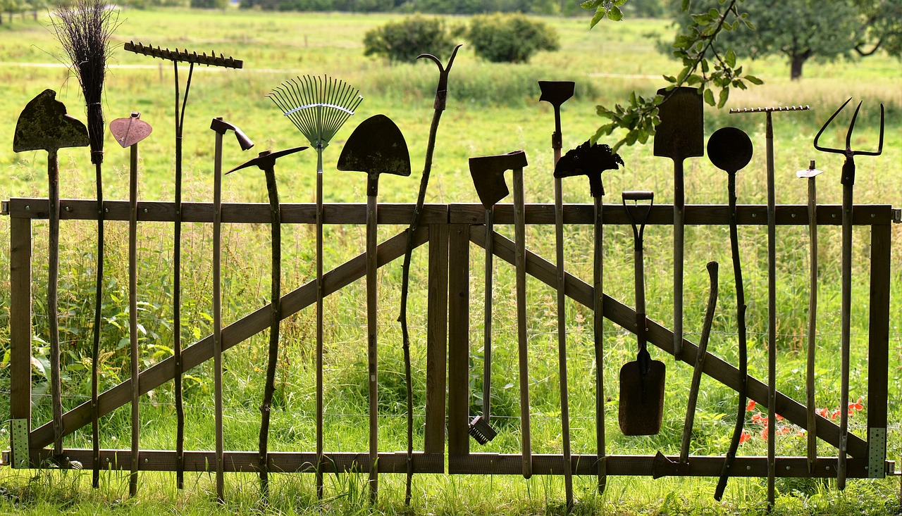

Transforming Spaces, Creating Oasis
Lucky Shrub specializes in garden design, creation, maintenance, and plant nursery sales. Our skilled team transforms spaces into stunning oases that reflect your style. From concept to installation, we pay attention to every detail to ensure functional and sustainable gardens. Visit our nursery for a wide selection of quality plants. Your trusted partner in creating beautiful gardens.
Our Team

At Lucky Shrub, our team is passionate about plants and dedicated to providing exceptional services. Led by Jason and Maria, our garden architect and marketing manager respectively, our team brings years of experience and expertise to create exquisite garden designs. With skilled landscapers, gardeners, and nursery staff, we work tirelessly to exceed our clients' expectations and create exceptional gardens.
Our services

At Lucky Shrub, we offer a comprehensive range of services to meet all your garden design and landscaping needs. From initial concept to final installation, our skilled team of garden architects and landscapers work closely with you to transform your space into a stunning oasis. Our services include garden creation, maintenance, and plant nursery sales, with a wide selection of indoor and outdoor plants available at our nursery. With our expertise and commitment to customer satisfaction, we are your trusted partner in creating beautiful and functional gardens that you can be proud of.
About Us
Welcome to Lucky Shrub, a premier garden design firm based in Tucson, Arizona. Founded by Jason and Maria, a husband and wife team who share a deep love for plants, Lucky Shrub has been transforming spaces into breathtaking gardens since its inception.
With our expertise in garden design and landscaping, we specialize in creating exceptional gardens that reflect your unique style and preferences. From conceptualization to installation, our skilled team of garden architects and landscapers pay meticulous attention to every detail to ensure that your garden is not only visually stunning, but also functional and sustainable.
In addition to our garden design and landscaping services, Lucky Shrub also operates a small plant nursery that offers a wide selection of indoor and outdoor plants. Handpicked by our experts for their quality and beauty, our nursery is a one-stop-shop for all your plant needs.
At Lucky Shrub, we are passionate about plants and committed to exceeding our clients' expectations. With our dedicated team and unwavering commitment to customer satisfaction, we take pride in creating gardens that are truly exceptional. Trust us to transform your space into an oasis you can be proud of. Contact us today to bring your garden dreams to life with Lucky Shrub.Welcome to Lucky Shrub, a premier garden design firm based in Tucson, Arizona. Founded by Jason and Maria, a husband and wife team who share a deep love for plants, Lucky Shrub has been transforming spaces into breathtaking gardens since its inception.
With our expertise in garden design and landscaping, we specialize in creating exceptional gardens that reflect your unique style and preferences. From conceptualization to installation, our skilled team of garden architects and landscapers pay meticulous attention to every detail to ensure that your garden is not only visually stunning, but also functional and sustainable.
In addition to our garden design and landscaping services, Lucky Shrub also operates a small plant nursery that offers a wide selection of indoor and outdoor plants. Handpicked by our experts for their quality and beauty, our nursery is a one-stop-shop for all your plant needs.
At Lucky Shrub, we are passionate about plants and committed to exceeding our clients' expectations. With our dedicated team and unwavering commitment to customer satisfaction, we take pride in creating gardens that are truly exceptional. Trust us to transform your space into an oasis you can be proud of. Contact us today to bring your garden dreams to life with Lucky Shrub.